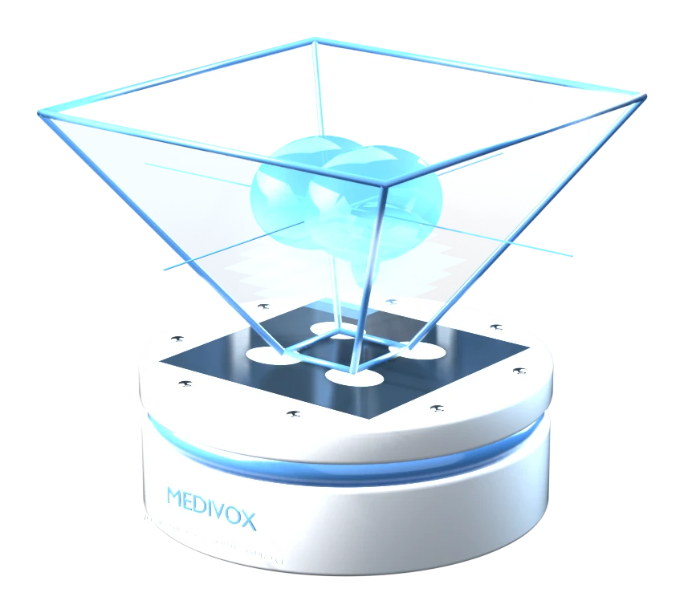

This device
Checking…Recent studies
View all- Loading…
Say it, see it

“rotate”“stop”“rotate left”
“zoom in”“show bone”“faster”
“mirror”“reset”
A short, fixed command list keeps recognition reliable. Turn voice on in the Hologram panel.
Hands-free

- Swipe left or rightRotates the hologram
 Push or pullChanges the size
Push or pullChanges the size Stays on this deviceCamera frames are discarded after processing
Stays on this deviceCamera frames are discarded after processing